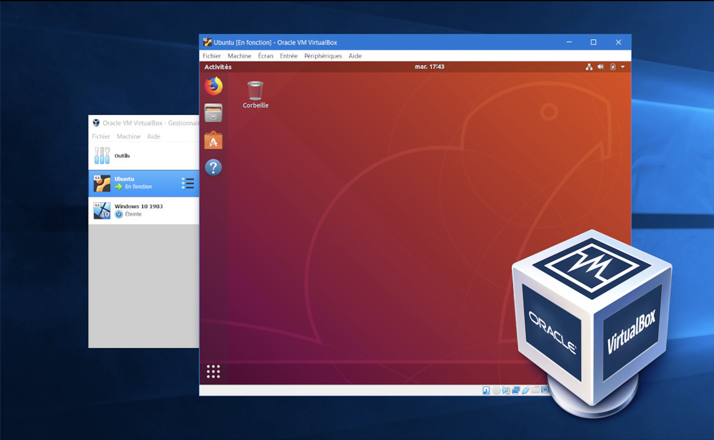
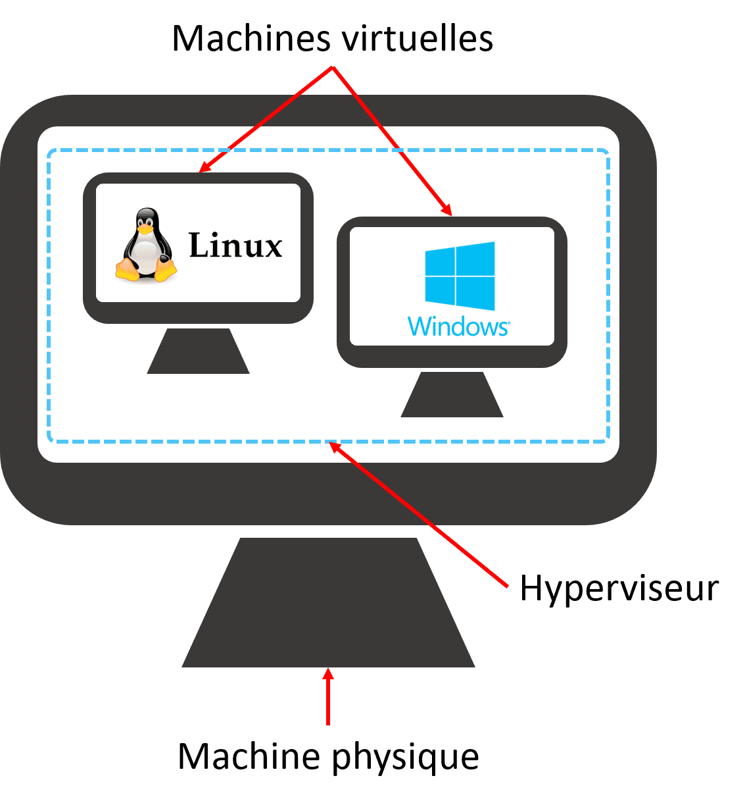

Les veilles
Veille Technologique
La Virtualisation
Qu'est-ce que la Virtualisation
La virtualisation est une technologie informatique qui simule les fonctionnalités matérielles pour créer des services informatiques basés sur logiciel comme des applications, des serveurs, des espaces de stockage et des réseaux. En créant une version virtuelle d’une ressource ou d’un appareil à partir d’un système informatique, la virtualisation permet aux entreprises de réduire les coûts matériels et d’augmenter l’efficacité.
Quelques exemples d'utilisation
- tester un OS sans l’installer sur votre machine physique
- s’assurer de la compatibilité d’une application avec différents OS
- utiliser une application dans un environnement particulier
- utiliser les fonctionnalités spécifiques d’un OS
- simuler une 2e machine et faire des tests de communication simples
- créer un petit réseau de plusieurs machines
- simuler des environnements multi-OS
- mutualiser des serveurs physiques et faire des économies
- partager un serveur physique en plusieurs serveurs virtuels
- migrer des serveurs virtuels sur de nouveaux serveurs physiques
- faciliter les opérations de maintenance
Qu'est-ce qu'une machine Virtuelle
Une machine virtuelle ou VM (Virtual Machine), est une machine qui n’est pas physique : c’est a dire, qui n’est pas constituée de ressources physiques. Pour fonctionner, une machine a besoin de 4 types de ressources : une CPU ; une mémoire (RAM) ; un stockage (disque dur) ; un réseau (optionnel). Pour fonctionner sans ressources la VM utilise les ressources d’une machine physique sur laquelle elle est installée : la machine hôte. Le principe de la virtualisation repose donc sur le partage de ressources.
Comment fonctionne la Virtualisation
La virtualisation consiste à créer plusieurs machines virtuelles (VM) à partir d’une machine physique à l’aide d’un logiciel appelé hyperviseur.
Qu'est-ce qu'un Hyperviseur ?
Un Hyperviseur est une catégorie d’applications capables de partager les ressources de la machine sur laquelle elles sont installées. L’hyperviseur a 2 rôles majeurs :
- Créer des ressources virtuelles propres à chaque VM
- Répartir ses propres ressources
Les types d'hyperviseurs
- Hyperviseur de type 1 : Virtualisation native / également appelée bar
- Hyperviseur de type 2 : Virtualisation avec système d'exploitation / également appelé hébergé
L’hyperviseur de type 1 ou hyperviseur natif, est, contrairement au type 2, installé directement sur le matériel, sans OS intermédiaire. Cela signifie qu’avec un hyperviseur de type 1, les ressources de l’hôte sont directement gérées par l’hyperviseur et non plus par l’OS qui disparaît ou est relégué au statut de VM. La machine hôte est dédiée à la création de VM et ne sait faire plus que cela.
Cet hyperviseur s’utilise dans un contexte très différent de l’hyperviseur de type 2. Ses performances sont bien supérieures, car il a un accès direct aux ressources (sans passer par un OS) et la totalité des ressources est dédiée aux VM. Les hyperviseurs de type 1 sont utilisés en entreprise pour plusieurs raisons :
- réduire les coûts matériels et de maintenance
- optimiser les ressources physiques
- répartir la charge dynamiquement
- permettre la haute disponibilité des serveurs
- créer des VM de préproduction pour les tester la phase production
L’hyperviseur de type 2, ou hosted hypervisor (hyperviseur hébergé), est le plus facile à mettre en place. Il s’installe simplement comme n’importe quelle application sur le système et permet, une fois installé, de créer des VM indépendantes de l’OS hôte. Chaque VM est autorisée, par l’hyperviseur, à utiliser une certaine quantité de ressources (définie au départ) et ne peut donc pas dépasser cette limite. L’OS hôte ne pourra donc pas être ralenti par les VM, si elles ont été configurées raisonnablement.
L’utilisation d’un hyperviseur de type 2 peut répondre aux besoins du type :
- tester un OS sans formater sa machine physique
- tester ou utiliser régulièrement une application sur un OS en particulier
- simuler une deuxième machine et faire des tests de communication simples
- créer un petit réseau de plusieurs VM pour tester des protocoles ou autre
Quels sont les différents types de Virtualisation
Virtualisation des serveurs
La virtualisation de serveurs utilise un hyperviseur pour diviser des serveurs physiques en plusieurs serveurs virtuels, chacun exécutant son propre système d’exploitation. On peut ainsi exploiter toute la puissance des serveurs physiques afin de réduire considérablement les coûts.
Virtualisation des postes
La virtualisation des postes de travail est une méthode qui simule un environnement de travail accessible depuis un terminal connecté à distance. Ainsi les entreprises peuvent permettre aux utilisateurs de travailler n’importe ou avec une connexion réseau, en utilisant n’importe quel appareil ou OS.
Virtualisation de réseau
La virtualisation du stockage est le processus de regroupement du stockage physique à partir de plusieurs périphériques de stockage réseau afin qu’il ressemble à un seul périphérique de stockage. Cela permet d’avoir du stockage virtuel facilitant l’adaptation de la capacité de stockage en fonction des besoins.
Virtualisation de stockage
La virtualisation du réseau consiste à combiner des ressources réseau matérielles et logicielles dans une seule unité administrative. L’objectif de la virtualisation du réseau est de fournir aux systèmes et utilisateurs un partage efficace, contrôlé et sécurisé des ressources réseau.
Virtualisation de données
La virtualisation de données permet à une application d’accéder aux données et de les exploiter sans avoir besoin des détails sur l’emplacement physique ou le format de ces données et ce grâce un logiciel qui intègre et visualise virtuellement ces données au travers d’un tableau de bord, permettant aux utilisateurs d’accéder à de grands ensembles de données depuis un point unique.
Virtualisation d'applications
Avec la virtualisation d’applications, les utilisateurs peuvent exécuter des applications sous une forme distincte, indépendamment du système d’exploitation utilisé. Cela permet notamment d’exécuter une application Microsoft Windows sur un système d’exploitation Linux ou Mac.
Quels sont les avantages de la Virtualisation
Flexibilité
La virtualisation offre à une plus grande souplesse dans la façon dont elle teste et attribue les ressources. Sauvegarder et restaurer des machines virtuelles est simple a faire ce qui permet de tester et d’expérimenter facilement de nouvelles technologies.
Fiabilité
La technologie de virtualisation nous permet de sauvegarder et de récupérer aisément nos données en cas de perte.
Efficacité
La virtualisation nous permet d’avoir une seule machine physique au service de plusieurs machines virtuelles. Cela signifie non seulement que nous avons besoin de moins de serveurs, mais aussi que nous pouvons utiliser ceux que nous avons au plus fort de leur capacité.